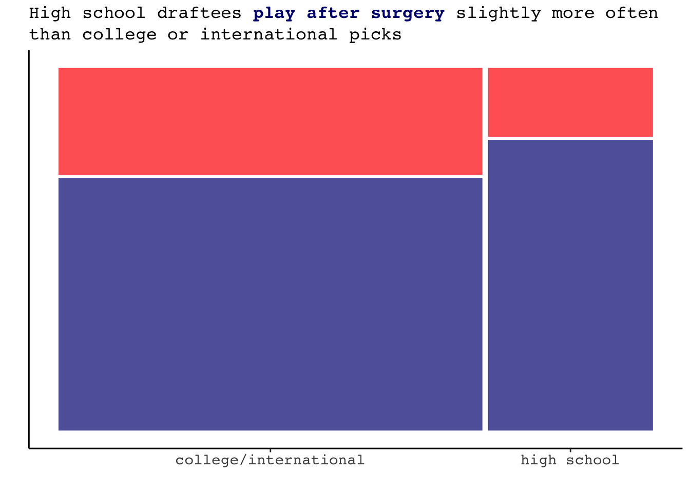
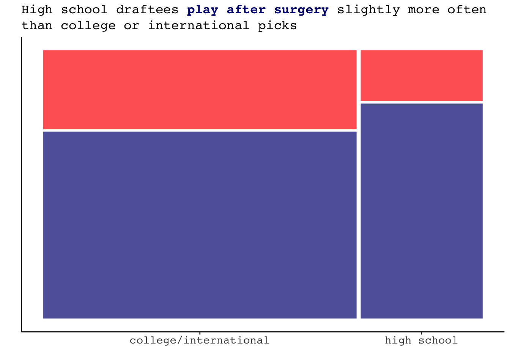

Tommy John Surgery and its Relationship to MLB Pitcher Career Trajectory
Erin Franke
Introduction
A pitcher’s success can vary dramatically over the course of their major league career. 2015 Cy Young Jake Arrieta had tremendous success in the middle of his career, but began his career with the Orioles where he pitched at levels far below league average. In more recent seasons he has also struggled. To measure a pitcher’s success overtime, we might look at ERA+, which takes a player’s earned run average each season and normalizes it across the entire league. An ERA+ of 100 represents league average, 150 and 80 would respectively represent 50% better and 20% worse than league average. Despite many still considering Arrieta legendary, the quality of his pitching has been slowly declining since his Cy Young season it is clear his value to a team is not the same as it once was. Arrieta’s career trajectory can be seen on the graph on the left below, but this path is just one example of the type of trajectory a player’s career may take. Current Atlanta Brave Drew Smyly has had a lot of variability in his success as a pitcher, as seen on the graph on the right. While his first four seasons appeared quite strong, Smyly performed below average 2016 and 2019 and since has had a little more success.

What might contribute to these pitching trends? While trends are incredibly complex and the result of many different factors, a major factor to pitching success is health. Notice Smyly’s missing stats in 2017 and 2018 - during this period, he underwent Tommy John surgery. Tommy John surgery is a major surgery that repairs a torn ulnar collateral ligament in the elbow by replacing it with a tendon from another part of a player’s body. Recovery typically takes a year, but can take up to 2.
This analysis will seek to understand how the trajectory of a pitcher’s MLB success changes over the course of his career. We will measure success in two forms: by WHIP to assess skill as well as innings pitched to measure longevity. In investigating these trajectories, we will especially focus on the impact of undergoing Tommy John surgery and try to weight the risk of signing a player that has had this surgery.
Data
This analysis uses data from all players drafted since 1987, the first year that the Secondary January Amateur draft did not exist. Data for this analysis were collected from multiple sources. Information on each player’s draft round and year were collected from a GitHub source and checked for accuracy. I then joined these data by player name and birth date with career level pitcher statistics and debut information from Baseball Reference, which had to be downloaded individually for each season. Tommy John surgery information was obtained from MLB Reports, and finally individual player data on the seasonal level were downloaded from Stathead Baseball. The diversity of the downloaded data allowed me to create a database with a wide variety of variables, and enables the comparison between players as well as the analysis of a player’s development over the course of their career.
The main variables I will use in this analysis are displayed in the codebook below. They come from my final data set, which is called seasonal_complete. My process to create this data set is fully documented in the data cleaning section of this website.
| Codebook | |
|---|---|
| Variable | Meaning |
| Player | name of pitcher |
| Year | year of MLB season |
| Age | player age during season |
| hs_draftee | whether the player was drafted in high school |
| birth_date | player date of birth |
| Debut | player MLB debut data |
| round | the player's draft round |
| surgery1Year | the year the player had their first Tommy John surgery while in the MLB |
| statsTime | whether the stats for this season come before or after the player's first surgery |
| surgery1time | whether the player's first surgery came before draft, between draft & debut, or after debut |
| ERA+ | adjusts a pitcher's ERA according to the pitcher's ballpark and the ERA of the pitcher's league |
| G | games played |
| GS | games started |
| IP | innings pitched |
| WHIP | number of walks + hits per inning pitched |
| SO | strikeouts |
Understanding career trajectory
Age distribution
In understanding career trajectory and longevity, we should first understand the age distribution of players in the MLB. Using all pitchers that played in the 2021 season, we get the following age distribution and see most pitchers are aged between their low twenties and low thirties.
Career length
In trying to understand the impact of having Tommy John surgery on a player’s career, we should seek to understand if there are differences in career length for players that receive the surgery. To do this, we compare the career length in seasons of players that did not have surgery at any point in their career to those that had surgery between their draft and debut date. We remove players that had surgery in the MLB for this graph - the fact that they made it far enough in their MLB career to have a surgery during it is an indicator of career length. Additionally, we do not include players that had surgery before being drafted as scouts deemed them worthy enough to be drafted despite their surgery. When looking at the graph, there do not seem to be any significant differences.

Performance
For players having their first Tommy John surgery following their MLB debut, it could be interesting to understand how their performance compares before versus after their surgery. In the following graph, we can notice that players average more innings following their surgery if it is done while they are younger. On the other hand, as players age into their thirties they almost always average fewer innings after the surgery. Players that did not play following their surgery are shown in red, but this trend holds even just looking at the blue dots, which represent players that play again after their surgery.
A question that might be prompted when understanding this graph is how the typical innings trajectory of a player that has not had Tommy John surgery plays out.
Playing after Tommy John surgery
Tommy John surgery is a major procedure to go through, and thus it is not certain that a pitcher will return to the MLB following this surgery. For the 318 pitchers in this study that received Tommy John surgery following their MLB debut, 233 (73.27%) of them returned to the MLB to play again. These 318 pitchers all had the surgery prior to 2020, as many of those that received the surgery in 2020 and certainly in 2021 will not yet have recovered and returned major league baseball.
Exploratory Data Analysis
If a team has a player decide to undergo Tommy John surgery, or is debating signing a player needing surgery, it would be helpful to understand what might be correlated with a player returning to the majors following their surgery.
A few possible performance based variables to look into could be the pitcher’s average strikeout rate and average WHIP, as well as total innings pitched prior to the surgery. We see that pitchers that return to the MLB tend to have slightly lower (better) WHIPs and slightly higher (better) strikeout rates. Additionally, the innings pitched variable appears highly informative. 75.29% of the pitchers that did not return to the MLB pitched fewer than 200 innings prior to their surgery. In comparison, only 51.5% of the pitchers that played after pitched less than 200 innings.


In addition to performance metrics, we can see if there is any relationship between a pitcher playing after their surgery and their role (starter or reliever) as well as whether they were a high school draftee.
 

A final variable to investigate is the age at which the player is having the Tommy John surgery. Below, we see that pitchers that pitch again tend to be slightly younger in age at the time of their surgery in comparison to those that do not play again. However, this difference is not quite as substantial as one might have originally thought.

Introducing the model
Having a basic understanding of some of these variables, we can now build a logistic regression model. In building this model, we will let \(Y\) be a binary indicator of if the pitcher plays again at the MLB level following his Tommy John surgery, which occurs at probability \(\pi\). Understanding the results of the exploratory data analysis, this model will utilize the following predictors:
- \(X_1\): indicator variable for if a player is a starter (1) or reliever (0)
- \(X_2\): continuous variable representing the total number of innings pitched by a player prior to their surgery
- \(X_3\): continuous variable representing the player’s average WHIP prior to their surgery
- \(X_4\): indicator variable of if a player was a high school draftee
- \(X_5\): continuous variable representing a pitcher’s strikeout rate prior to their surgery
- \(X_6\): continuous variable for the age at which a player got surgery
Setting the priors
Starting with the centered intercept \(\beta_{0c}\), we recall our prior understanding that for the average player there is roughly a 73% chance of rain, i.e. \(\pi \approx 0.73\). As a result, we can set the prior mean for \(\beta_{0c}\) on the log(odds) scales to 1:
\[\begin{split} \left(\frac{1.35}{1 + 1.35}, \frac{5.474}{1 + 5.474}\right) \approx (0.5747, 0.8455). \end{split}\]
We have only a very basic understanding of each predictor’s relationship with a player’s likelihood of returning to pitch at the MLB level and thus will utilize weakly informative priors for these coefficients. As a whole, the model can be summarized as: